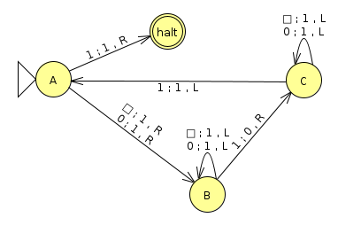

Homework 10: Undecidability And Uncomputability (17 Points)
Chris Tralie
Overview / Logistics
In this homework we'll explore some limits of computation: in particular, languages that are at the edge of decidability and functions that are at the edge of computability.
There are no JFLAP problems on this homework. You should submit a single typed document with the answers to each question. You can use Microsoft Word, LaTeX, or anything else you're comfortable with.
Problem 1 (3 Points)
Consider the language L of turing machines M that have the property that if M accepts w, then M also accepts the reverse wR. Show that L is undecidable
Hint: You can use a very similar trick to the proof that ETM is undecidable; that is, create an auxiliary machine that you can show could be used to decide ATM if you feed it to a decider for L. Alternatively, you can argue that the conditions for Rice's theorem are fulfilled.
Problem 2 (3 Points)
Define a useless state in a Turing machine as a state that is never reached on any possible input to the machine. It would be nice to detect and remove these states for a more parsimonious Turing machine. Unfortunately, the language
LU = { <M, q> | q is a useless state in M}
is undecidable. Prove this by contradiction by showing that LU can be used to decide ETM.
Problem 3 (3 Points)
We'll explore something called the Collatz conjecture in this problem. This is a seemingly innocuous math problem that's very easy to state, but it has served as a "black hole" that has sucked in many an aspiring mathematician, because it still eludes a proof after almost a century from when it was first posed. The conjecture is as follows: given the following piecewise function
\[ f(x) = \left\{ \begin{array}{cc} 3x + 1 & x \text{ is odd} \\ x/2 & x \text{ is even} \end{array} \right\} \]
It is thought that it is always possible to iterate this function and end up at a 1, starting at any natural number. Take the following examples, which all end at a 1 (in fact, it's been exhaustively verified that every natural number up to 268 eventually ends up at 1)
Hence, the problem is sometimes referred to as the "3x + 1" problem
The author of this popular math article on the conjecture recommends that we do not try to solve this math problem.. However, let's cheat for a moment and suppose that HaltTM is decidable. Provide a high level description of a machine that outputs whether the Collatz conjecture is true or not, using this hypothetical decidable HaltTM oracle to help you.Hint: To nail this, you'll have to use HaltTM more than once!
Problem 4 (5 Points)
We're going to think about some very large numbers now. Consider a function over the natural numbers known as the Busy Beaver Function BB(N), whose output value at N is the maximum number of steps[1] that any Turing machine of a special form with N states can take before halting, if it halts. The Turing machines used in the Busy Beavers have the following properties
Busy Beaver Format
- The tape alphabet Γ is {0, 1}
- The tape starts off with all 0's stretching to infinity on the right and left side (there is otherwise no input)
- The machine can only move left or right (there is no stay)
- There is a single accept state that does not count towards the N states that are used.
-
(1 Point) What input/output pair of the Busy Beaver function can you bound from below by the following Turing machine? What value is the lower bound? (This value actually turns out to achieve the maximum for this number of states)
Click here to download the JFLAP file, which you can use to help answer this question. Note that JFLAP does not have the capability to start the tape with all 0s, so blanks are treated as 0s in this machine and are redundant with all of the 0 rules.
- (2 Points) A function from the natural numbers to the natural numbers is computable if, starting with the input to the function, the machine halts with just the output to the function on the tape. Prove that the busy beaver function is not computable, supposing by contradiction that it is computable and using it as a subroutine to decide something undecidable.
-
(2 Points) Suppose for a moment that the halting problem is decidable. Then, it would be theoretically possible to compute BB(N) by the following very slow but simple algorithm
- Start BB(N) at 0
- For each machine M with N states in busy beaver format
- If M halts, run M and record the number of steps s that it takes. If s > BB(N), then update BB(N) to be s
Hint: How many possible arrows can you draw when you're at a particular state and you see a 0? How about if you see a 1? How would you multiply these possibilities across all states? (Go back and think about the fundamental counting principle if you're rusty)
Problem 5 (3 Points)
The busy beaver function grows very quickly. In fact, BB(18) already exceeds Graham's number, one of the biggest numbers ever used in mathematical research (check out this video, this video, and this video). But we can show something even stronger and more general about the busy beaver's asymptotic growth. Let f be any computable function over natural numbers expressed in binary. Prove that there exists and Nc so that BB(N) > f(N) for all N > Nc.
Hint: Since f is computable, you can devise a Turing machine for it. Suppose this Turing machine has C states, which is a constant independent of N. Now fix N and consider how you would devise a machine in busy beaver format to compute f(N) and then to take a number of steps at least as long as this. How many states does this machine have, in terms of C and N?
Hint within hint(!): Since the busy beaver machine starts off with a tape of all 0's, you have to use state memory to load in the input N to f(N).